I’ve always enjoyed yard sales and the activity of thrifting. It’s always fun going into the experience not knowing what I’ll find, almost like it’s a gamble finding something that’ll interest me. However, to avoid overspending in this hobby, I made a general rule for myself: If I don’t need it or can’t think of an immediate use for it, I won’t buy it. That way, I can still buy things that I find cool but won’t just sit on a shelf or in a box collecting dust. In my hometown before I moved, there was a flea market held every Saturday, and I would go to it often, sometimes even setting up my own shop there. When I moved to Louisville and learned about the various Peddler’s Mall locations in the area, I knew that I had to go to them. I visited the Middletown Peddler’s Mall within my first week in Louisville, but didn’t capture my thoughts from my initial trip there. However, I was able to capture my thoughts for my first trip to the Outer Loop Peddler’s Mall, and here they are in no particular order.
Gaming in the Wild
Seeing video games in places like this always makes me think “what the heck are you doing here?”, since gaming is typically seen as a more niche, expensive hobby compared to other things that can be thrifted. Sometimes you can find games for cheap, as the seller may not know the game’s real worth, or you can find games overpriced as the seller overestimates the game’s worth. The first gaming related item I came across was an example of the latter, as I found a complete-in-box (CIB) copy of EA Sports: Active Personal Trainer for the Nintendo Wii for $40. The price seemed really steep to me for what seemed like just another fitness game on the Wii. After leaving the Peddler’s Mall, I looked up the games worth on pricecharting.com, the primary source for checking secondhand prices, and saw that the CIB value was $19.99. Listings for CIB copies on prices like eBay or Mercari ranged between $20 - $30, but hardly any listings were priced $40 or more. I didn’t buy it, of course, as I had no interest in the game and my original inclination that it was overpriced was correct.
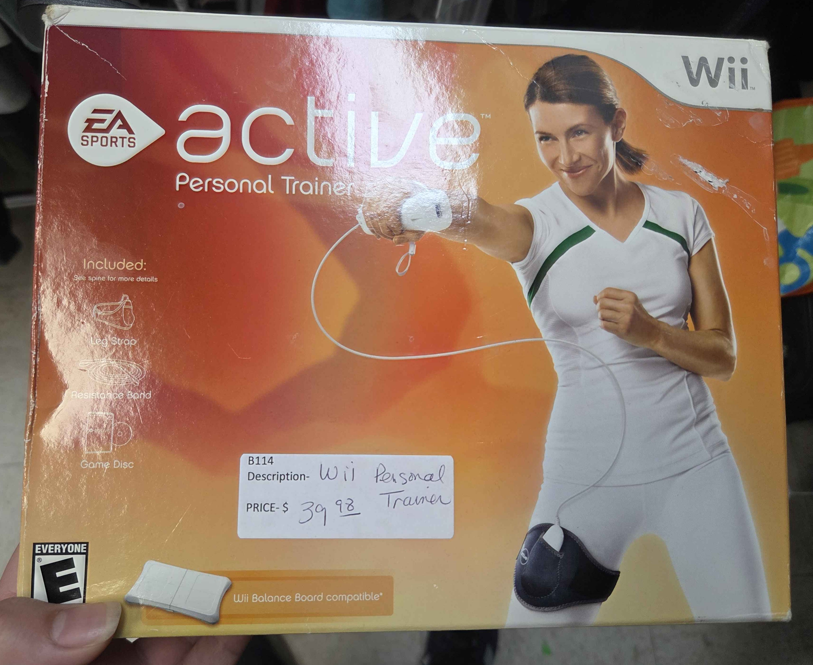
While seeing video games in places like this are sometimes uncommon, it’s even more uncommon to come across knockoff game consoles. Normally, you can find knockoff game consoles from online storefronts whose sole purpose is to sell knockoffs and cheaper quality items, but finding these items from secondhand sellers is a bit more shocking. I feel like it’s easier for these items to be sold online, as dubious sellers can hide what the product really is behind fake images, false claims, and hijacking the algorithm by appearing when people search for genuine products. It saddens me whenever I see products like these being sold physically because either the seller didn’t know they were originally buying a knockoff and are trying to recoup their money, or that they know exactly what they have and are trying to trick others into buying it off of them. Since this “GS5” had some of its original plastic seal, I’m almost inclined to believe the latter, but I have no real way of confirming that.
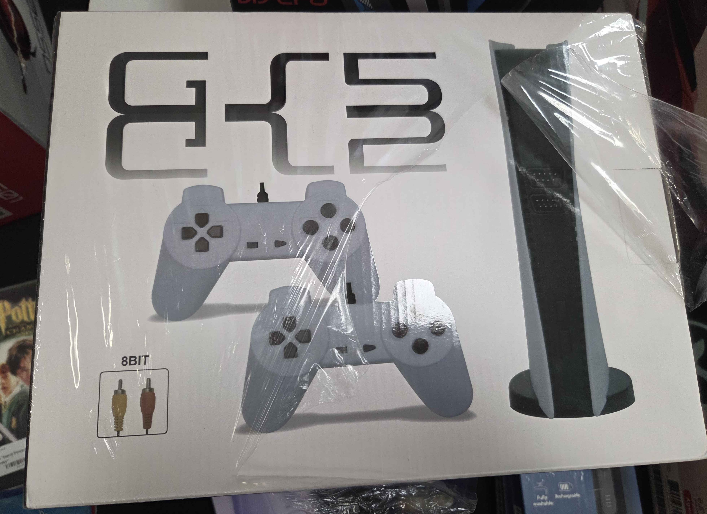
While seeing solo video game products and knockoffs feel rare, seeing a secondhand vendor dedicated to video games and related merch feels like finding a needle in a haystack. As mentioned previously, gaming still feels like a relatively niche hobby, and video game vendors tend to sell online or at dedicated gaming areas to maximize the amount of people who will buy their stuff. Most dedicated video game vendors do their research and are involved in gaming, so their products’ prices tend to be around what they’re actually worth. I usually like talking to vendors about their gaming experience and interests, but since vendors at Peddler’s Mall just leave their product in their booths instead of verbally selling, I wasn’t able to do that.
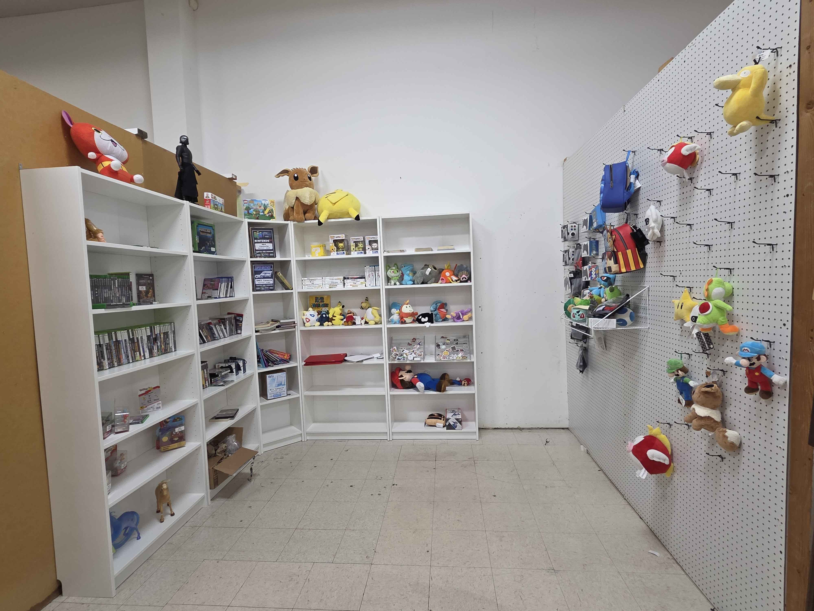
“Outdated Novelties”
Since thrifting spaces tend to sell cheaper items and things lose their value as technology progresses and newer things replace them, it’s no surprise to often find “outdated novelties”. What I consider “outdated novelties” are things that someone would buy just to display on a shelf and say “that’s cool to own”, while never actually using it, since better alternatives exist. One example of this is this Official Rules of Card Games manual that I came across. As a card game fan, it was something that made me say “that’d be neat to own”, but I would realistically never use it, as I could look up the rules of these games whenever I needed. Someone else who’s a card game collector could buy it and display it with their other card themed memorabilia, but it would ultimately just sit on a shelf, as an avid card game player would either already know the rules of the games they play, or could easily look them up.
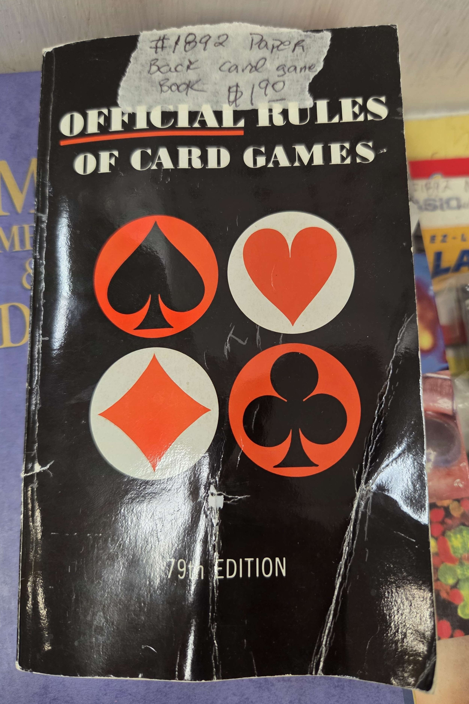
With the rise of streaming services and removal of DVD players in most modern TVs, DVDs are starting to fall into the “outdated novelty” category. While they’re not quite there yet, as people still buy them to actually watch them, their abundance and cheap price is why I’m talking about them here. Unless a movie just came out or it was a major hit, you can easily find it for $5 in your local Walmart bargain bin or $1-2 at the thrift store since they’re no longer the most popular or convenient way to watch movies anymore. Hell, I’m taken aback when I see movies being sold for more than a dollar or two at thrift stores or yard sales. However, because most movies are dirt cheap at these places, you can buy all the ones you want for a relatively low price. The same cannot be said for movie bundles. What I mean when I say “bundle” is when a seller takes a pile of random movies they’re selling, packs them all together, and sells them for a “higher” price. The issue I have with this is that if I only want one movie that’s in the bundle, I then have to buy the entire bundle to get that movie, including all of the other movies I don’t care about. Mentally, it feels like the price I paid for the bundle was the price I paid for the 1 movie I wanted, even though the price was fair for everything I got. What’s even worse with bundles made by solo secondhand sellers is that they’re not making bundles with a common theme or genre - it’s usually just a random group of movies a seller grabbed out of their entire stock. So if you bought a bundle containing the movie Back to the Future, that bundle could also contain Paul Blart: Mall Cop, Ferris Bueller's Day Off, and The Angry Birds Movie, which you may not care about and then have to resell or donate, creating more trouble than just buying Back to the Future itself.
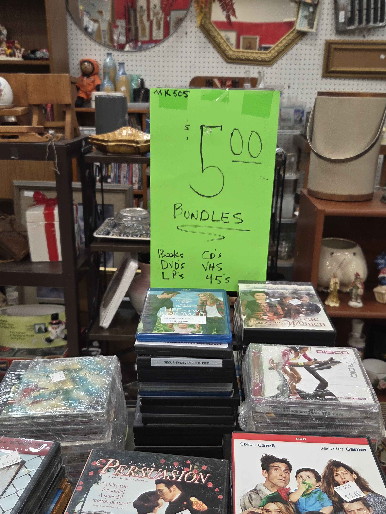
Interesting Investigations
Miffy
My introduction to the character “Miffy” was from my coworker, who really likes Miffy. She showed off some of her Miffy merchandise one day during a meeting when my mentor asked about it. After seeing the book about Miffy during my trip, I wanted to learn more about Miffy and what exactly she was. After some research, I learned that she was created in 1955 by Dick Bruna, who originally came up with the inspiration for Miffy during a holiday trip. He would tell bedtime stories to his eldest son about a white, little bunny who scampered the garden of their holiday home in Egmond aan Zee. Later on, when Bruna went to initially sketch out Miffy, “he decided he would prefer to draw the bunny in a little dress, rather than a pair of trousers, and so Miffy became a little girl bunny.” Miffy is just one of Bruna’s book characters, but she is easily the most popular and recognizable amongst his works. Miffy started out as a book character, where her stories were very grounded and simplistic so that “children [were] able to identify with Miffy and her adventures”, but now she has appeared in numerous tv shows, merchandise, shops, and her own movie. Miffy’s history and legacy also includes a clash with Sanrio, the company behind Hello Kitty. While Miffy debuted in 1955, Sanrio’s bunny character Cathy was created in the early 1970s. In 2010, Mercis Media (on behalf of Dick Bruna) filed legal action against Sanrio, alleging that Cathy infringed on the copyright of Miffy. The result of this legal action was that both parties settled out of court, and Sanrio could no longer use Cathy. However, due to settling out of court, both parties donated the funds that would’ve otherwise been used for legal fees to help victims of the 2011 Tōhoku earthquake and tsunami. Honestly, I can easily see the appeal of Miffy, as she is a pretty simple and cute character and it’s easy to want to see more of her life and adventures.
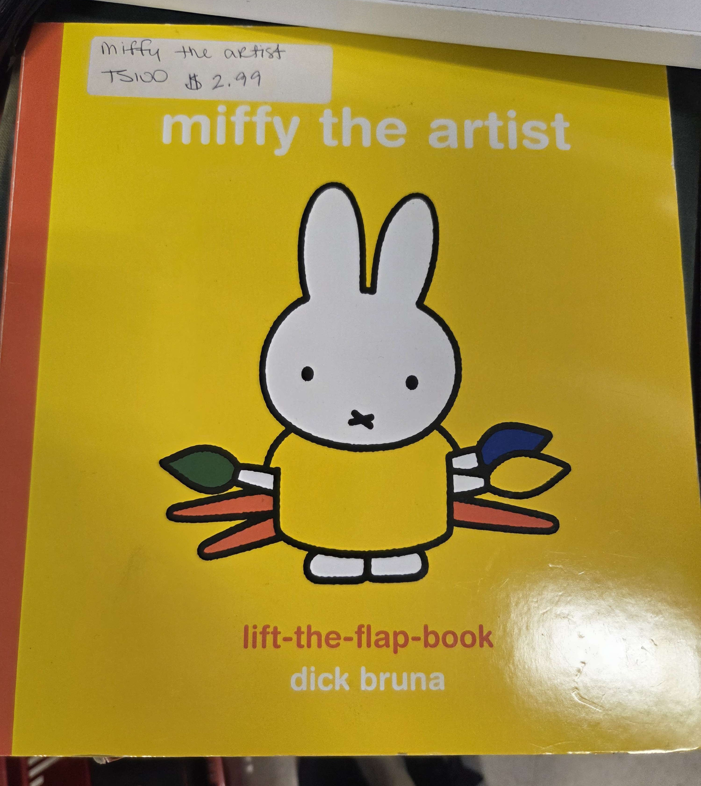
Lomo Cards
In my brief research, lomo cards seem to be unofficial photocards and are primarily popular within the K-Pop community. Photocards are exactly what they sound like - cards with photos of idols or other icons on them. Since photocards are official, they can be rarer to get and be more expensive to obtain, so lomo cards are for people who want the image through a cheaper alternative. Lomo cards are typically fan-made, so people who make them can have a lot of fun designing, making, and giving away cards they make themselves. While I don’t personally understand the appeal, I used to collect something similar (Nintendo’s amiibos), so I can’t be one to judge.
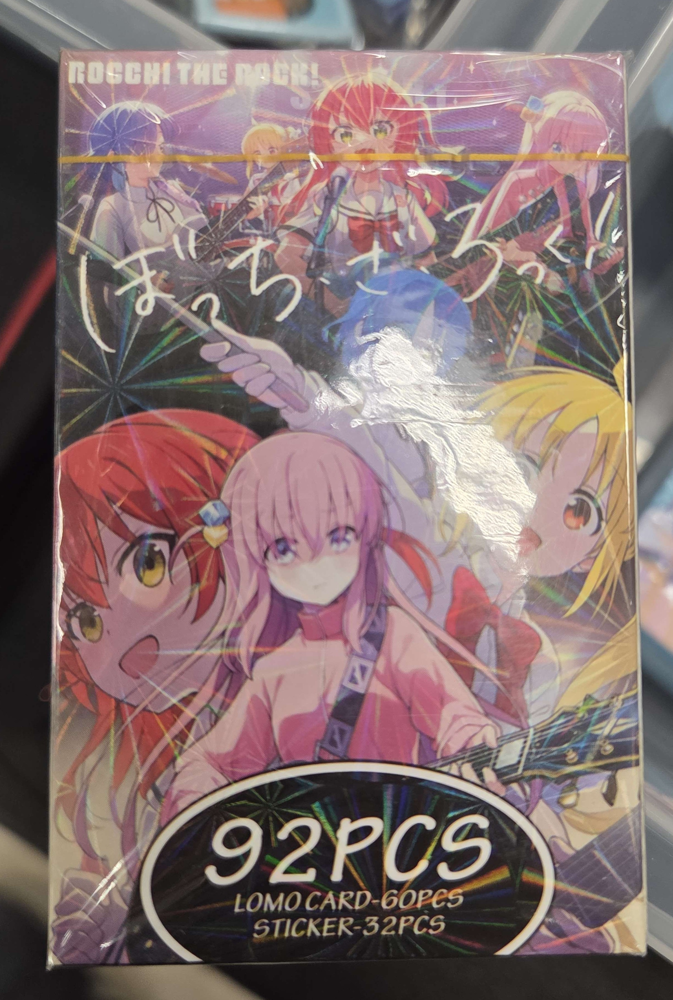
High and Lows of Handicraft
Handcrafted items have started becoming a mainstay in the thrifting space. Sellers, mainly small business owners, sell their crafts at these places as a way to expand their brand and softlaunch their products, specifically because the barrier of entry is so low. However, because the barrier of entry to sell at thrift spaces is so low, the quality of these handcrafted items can vary wildly, with some very high highs, and some very low lows.
One set of high quality handcrafted items I saw at Peddler’s Mall were these 3D printed business card holders. I found them neat because the holder itself could be customized to fit the type of business it would be advertising. The company, Make It Big Crafting, had business card holders themed around sewing, hairdressing, and mechanic work, and the prices for the holders felt pretty fair ($10 per holder). They also had 3D printed soap holders and mugs, but the card holders were what interested me the most.
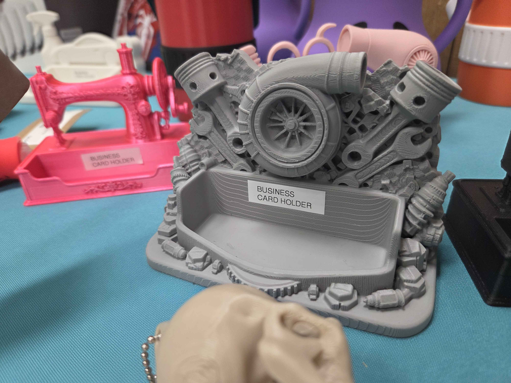
On the flipside, there were also handcrafted items that were of poor quality. One example I came across were these custom printed bottles where the art and designs used were AI generated. Specifically, you can tell that this music bottle’s design is AI generated based on the sloppy and inconsistent background details. I think the seller’s other bottles had AI generated designs, but this one was the most blatantly obvious to me. The use of AI generated imagery for products like these sadden me because it exhibits a lack of care and attention to quality from the seller and shows me that they’re just trying to make a quick buck and dupe people into buying items that look good at a glance, but then look ugly when you really look closely.
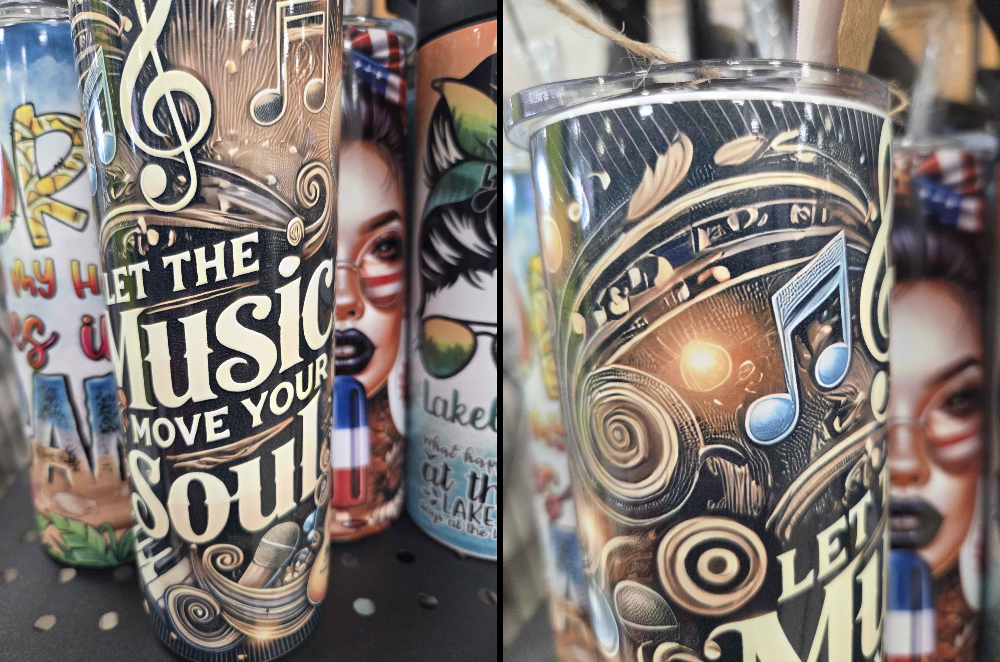
Booth Decoration
An overlooked aspect of secondhand selling is attracting the customer - what do you have that sets you apart from other sellers and entices potential customers? When selling for an established business, that marketing aspect is handled by someone else, but when you’re setting up shop on your own, that’s now your responsibility. The positive aspect of an indoor flea market is that the booth decor can be permanent since it’s protected from the elements, which means that sellers can decorate their booth without the fear of it being destroyed or having to take it down after a short time. While a lot of the booths at the Peddler’s Mall were plain, some of them were well decorated and drew me into their space, even if I didn’t originally have an interest in going in. However, it’s a delicate balancing act of filling the booth with things available for sale vs. decorative items. The seller wants to maximize the amount of things they can sell, and any item that’s “Not For Sale” is taking away real estate from an item that could be sold.
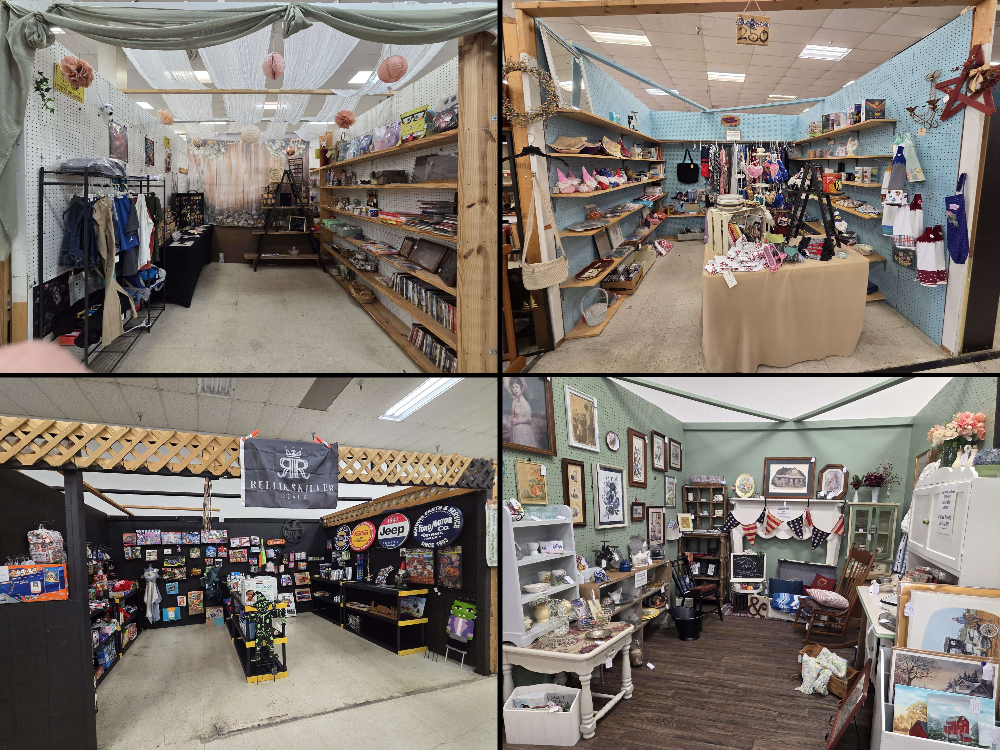
Sometimes a seller can’t go “all out” when decorating their area, so they opt for the next best thing: a well-designed sign. A sign that encapsulates the seller’s brand and makes them stand out can achieve the same goal as fully decorating a booth, while also solving the space issue that comes with decorating. Having a sign can also make the space feel more like an actual brick and mortar store, which could further entice customers to buy their products.
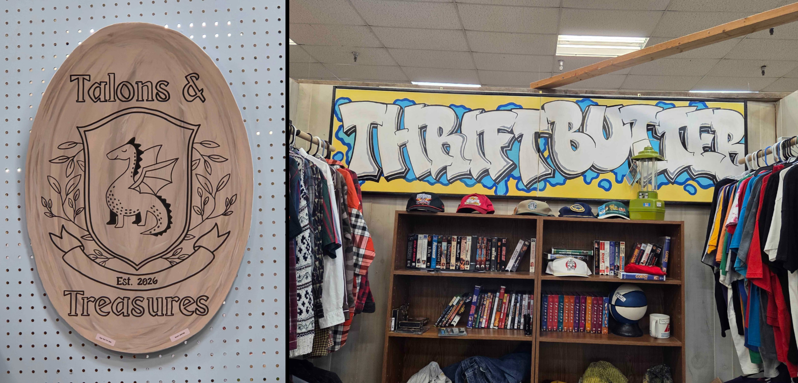
As a whole, I really enjoyed my experience at Outer Loop’s Peddler’s Mall. This location had more booths that contained items that I cared about, and it will definitely be a location that I visit again soon.
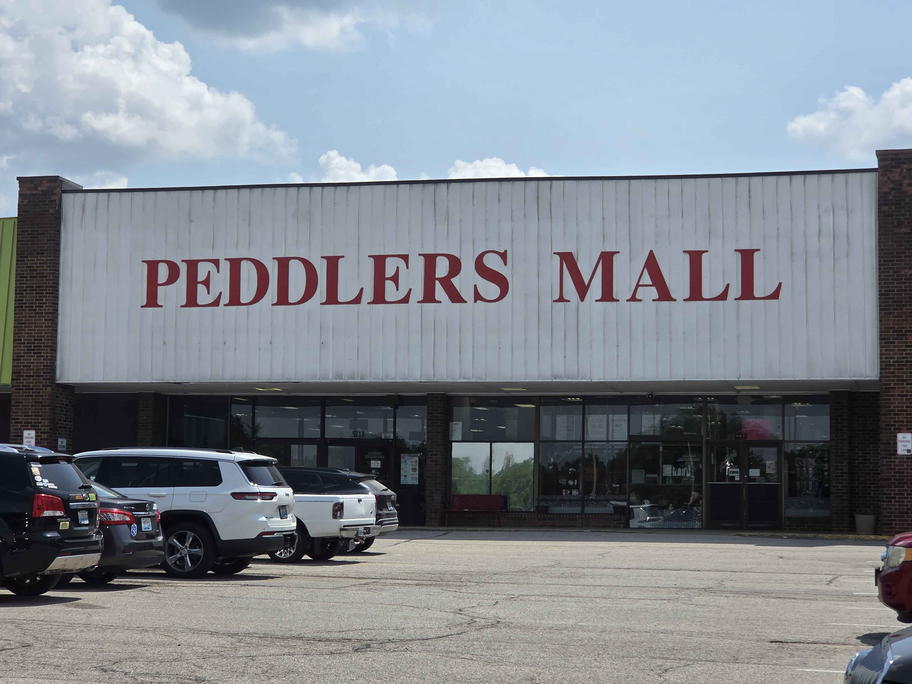